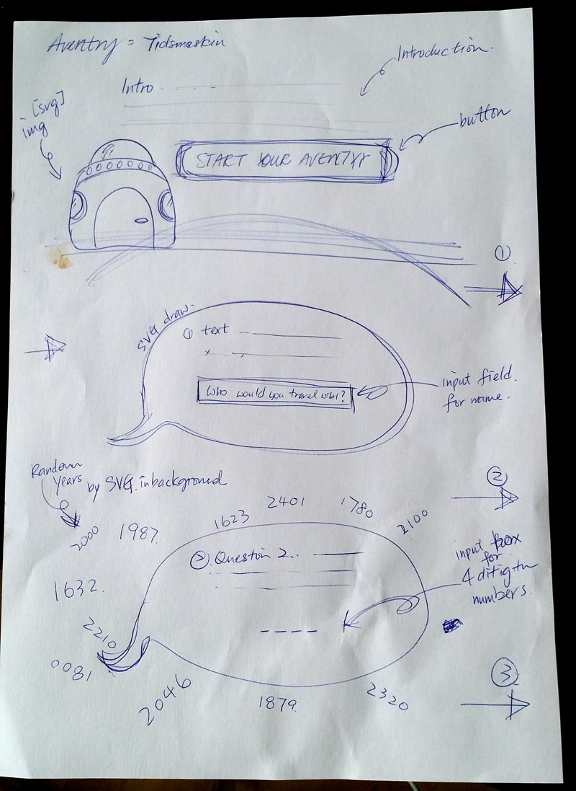

När jag har bestämt mig vilken slutprojekt ska jag göra. Jag tror det blir enklare att fokusera på saker som jag behöver att undersöka och lära mig mer. I början av projektarbete har jag lagt mycket tid på SVG och Canvas. Eftersom både två är nya metoder för mig och jag vill fördjupa mina förståelse innan jag kan bestämt mig hur jag kan använda dem i mitt projekt på det bästa sättet. Jag har läst många olika materials från EJS, codeschool, WS3school , MDN web docs och bland andra blogg samt forum.
Processen till målet är inte så enkelt eftersom det finns massa av material och information kan man lära sig och jag måste ha bra kontroll att inte gå fördjupa på en sak för att det finns tidsbegränsad på projekt. Jag måste kontrollera i helhet att jag kunna avsluta projekt följa min planering, det önskemålet som jag vill uppnå genom det här slutprojektet.
Jag började med en skiss på framsidan, skapar html sidor, mappar och bootstrap som skapar en grundande design på webbplatsen. Sedan testade jag att använda SVG att skapa objekt och texter. Jag skapade två sidor som är liknade i layout men dem ska hämta två olika värdet för den här äventyr spelet - "Time Machine" som jag namngav den. Jag har många fantasibilder i hjärnan och jag tror kan fixa spelet som planerade. Men det var mycket svårare än jag hade tänkt och tiden var inte så optimistisk. Det var svårt att ska ett Canvas spelet som jag vill ha och sedan har jag svårt att kombinera Canvas i html med andra komponenter på webbplatsen. Spelet som jag sparade många timmar var inte nöjd. Jag sparade den i undermeny här men jag använder inte i "Time Machine".
Jag fortsätter med javascript för att kontrollera värdet på namnet och året som användare skriver på textfältet. Jag uppdaterade dem från prompt och alert till HTML DOM innerHTML. Jag testade också att kombinera olika sätt, funktion, while, förlopp, if…else sats, svg och canvas också. Jag testade att skrev canvas texter på svg objekt och canvas animation. Det var faktisk jätte kul att få något funkas till slut och förstår hur jag kan använda olika tekniker. Men det finns mycket mera jag vill lära mig och jag är ganska nöjd med min webbplatsen. Det kan kolla alla värdet och flödet är bra.
